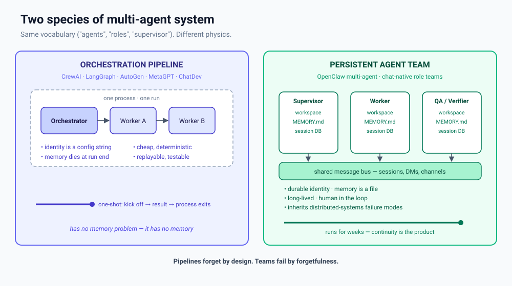
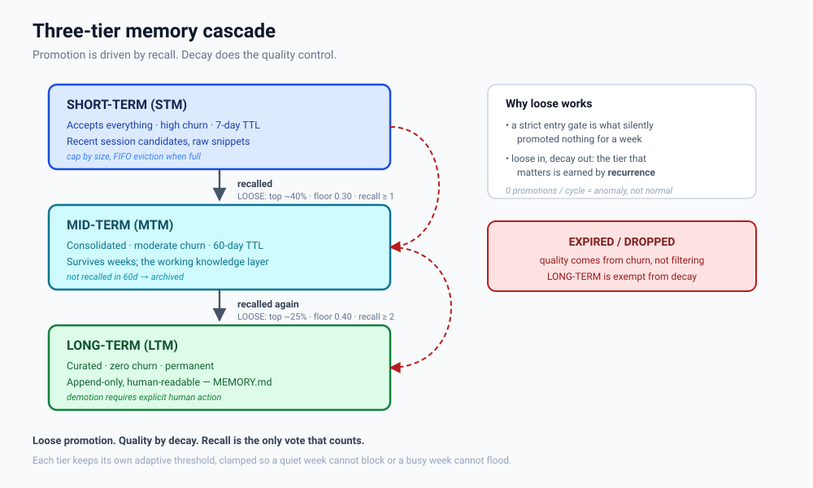
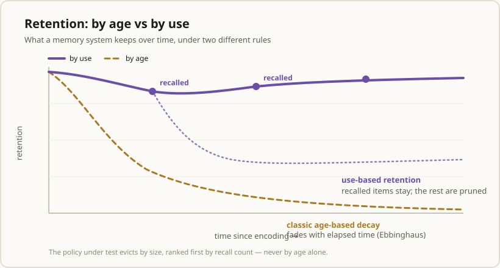
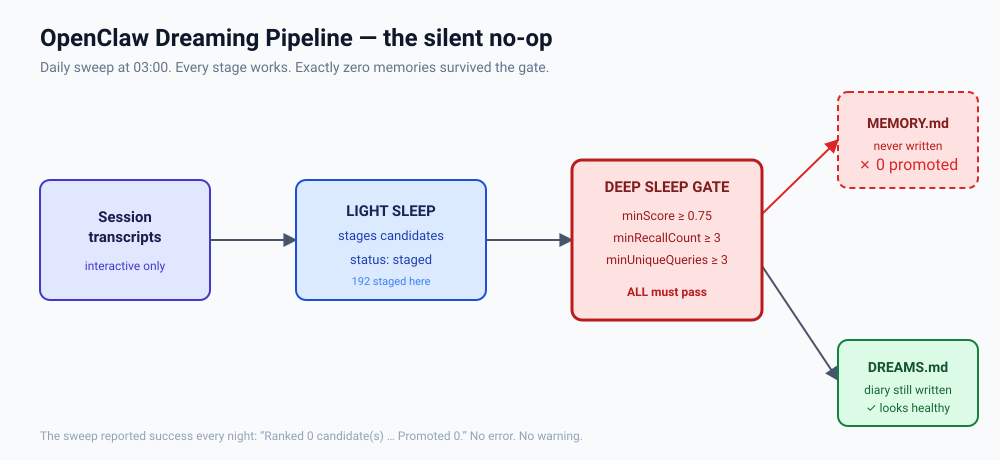
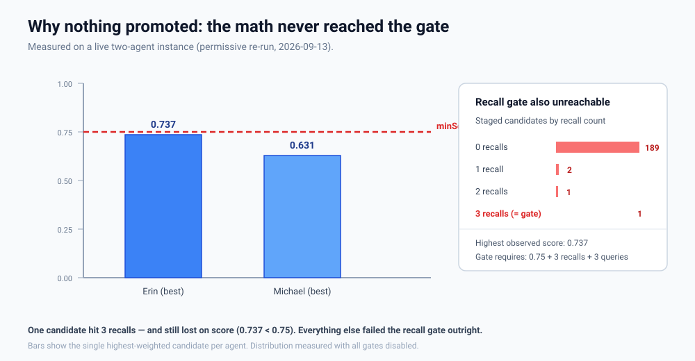

Cadre · a persistent agent team, ready to install
Building an AI Team That Lasts
Cadre turns any OpenClaw deployment into a coordinated team of agents — with a memory designed on purpose, borrowed from how brains actually store things.
1. What Cadre is§
Most AI assistants forget you the moment the tab closes. Ask a question, get an answer, and the system drops you entirely. That's fine for a web search. It is useless for an assistant that is supposed to know you.
Cadre is the other thing. It isn't a package you install or a service you subscribe to. It is a folder of plain Markdown files plus a setup procedure that your own agent reads and carries out — turning one lonely assistant into a small, coordinated team: a manager, a few specialists, and a shared way of getting work done.
Names, because these two get tangled: a persistent agent team is the kind of system — the category. Cadre is one instance of it: a specific roster and set of conventions a deployment installs. Cadre is a persistent agent team; not every persistent agent team is Cadre.
The entry point is a wizard — and it is a conversation, not a script. It doesn't sit there waiting to be invoked: it opens by asking whether you're ready to start Cadre, then interviews you — what you want the team for, which roles you need, what to call them, what they may spend. It shows you what it found before asking anything, and it writes nothing until you confirm each step. A wizard that installs silently is a bug.
Everything Cadre does lives in text you can open, read, and edit. There is no hidden database, no opaque dashboard. The rule the project runs on: if you can't cat it, don't trust it.
2. Why a team at all§
"A manager agent and worker agents" is a phrase that describes two completely different kinds of system. That conflation is the most common mistake in this whole space — so it's worth splitting them apart once, cleanly.
- Orchestration pipelines. One program spins up several roles to get a job done: plan, build, review, ship. Famous examples include MetaGPT[1] and ChatDev[2], with frameworks like CrewAI, LangGraph and AutoGen[3][4][5] supplying the plumbing. They are brilliant at what they do — and they are ephemeral. The team forms for one job, finishes, and ceases to exist. Their memory dies with the run, by design.
- Persistent agent teams. Separate agents, each with a durable identity — its own workspace, its own memory, its own chat channel. They don't dissolve. They can be given new work next week, and they still remember last week. Continuity isn't a side effect here; it is the product. (Cadre is one of these — a particular team, not the category itself.)

That difference produces a difference in how they break, and it is the sharpest idea in the underlying paper:
A pipeline that produces nothing throws. A team that produces nothing reports success.
A program that ends with nothing to show for itself crashes. It stops, it tells you. A durable team has no such reflex — because from its own point of view it did exactly what it was asked, and the answer "nothing" is not an error. That is what Cadre is designed against.
3. What's in the box§
Cadre ships roles, not opinions about which roles you must have. The wizard presents the roster as a checklist; you deselect what you don't want.
| Role | Owns |
|---|---|
| Project Manager | the plan, the task board, the schedule, dispatch and tracking |
| Requirements Analyst | intake, clarification, scope — where every project starts |
| Project Designer | architecture, approach, specifications |
| QA / Verifier | independent verification; evidence, not status reports |
| Security / IT | audit, exposure and hygiene — advises, never self-edits |
| Social Media Manager | external comms; can act as the single "doorway" to the team |
| Finance Manager | budgets and spend tracking |
| Agent Resources | the roster itself — onboarding, loadouts, capacity |
| Consultant | second opinions, red-teaming, advice |
Three supporting ideas make it a team rather than a pile of chatbots:
- Mailboxes. Every agent has an
inbox/and anoutbox/. That means the whole team can be run from a single chat: one agent you designate as the "doorway" collects everyone's queued messages on a schedule and routes your replies back to the right inbox. - Budgets. Each role gets a spending envelope, so autonomy never quietly becomes a runaway bill. Limits are enforced by policy and accounting — not by asking the model nicely.
- A project pipeline. Every project enters the same way: Requirements Analyst → Project Designer → Project Manager, who then breaks work into tasks and tracks workers against them.
And an autonomy ladder: you start doing much of the PM and QA work yourself, and hand it over as the agents prove themselves. Trust is earned, not assumed.
4. Memory: designed on purpose§
A team that forgets isn't a team. So the most interesting engineering in Cadre is the part almost nobody thinks about until it breaks: what a long-lived agent chooses to remember.
Most AI memory is an afterthought — dump everything in a file and hope. That fails in a specific and instructive way, because the problem being solved is one biology solved a long time ago.
In humans, memory consolidation is the process that stabilises a day's experiences into durable long-term memory. It happens substantially during sleep, across stages like slow-wave ("deep") sleep and REM, where fragile recent traces are replayed and rewritten into something more permanent.[N1] Sleep is not the absence of activity — it is when the filing happens. Cadre's memory pipeline even keeps the name: it is called dreaming[10].
Two facts from memory science shape the whole design:
- Retrieval is what makes a memory stick. Recalling something briefly destabilises it and re-writes it a little more permanently — a process called reconsolidation.[N2] Frequency of recall, not some abstract importance score, is the honest signal.
- Forgetting is maintenance, not failure. Unused connections are actively removed while well-used ones are reinforced — synaptic pruning.[N4] A memory system that never forgets doesn't have a perfect memory; it has a pile.
The design: loose in, bounded out
The naive design is strict in, permanent out — a high bar to enter, and once in, you stay forever. Cadre inverts it. Getting in is cheap. What earns a memory a higher tier is recurrence. And what decides what gets dropped is size, not age: when a tier fills up, something has to give.
Loose promotion. Quality by eviction. Recall is the only vote that counts.

Try it — the whole argument is in which four survive:
🎛 Eviction, side by side
A tier has filled up and must shed half its contents. Choose the rule and watch what your team keeps.
Under eviction by age, the newest entries survive regardless of worth — so your most-recalled facts (the one you look up constantly) get deleted because they're old. Under eviction by use, the frequently-recalled entries survive and the never-recalled ones are pruned. Same tier, same budget — opposite outcomes.
Since Ebbinghaus, we've known that unused memories decay along a forgetting curve — steep at first, then flattening.[N3] Classically that curve tracks elapsed time. Cadre ties it to use instead: a frequently-recalled old memory outlives a rarely-recalled new one, and age never triggers eviction on its own.

Finally, the gates themselves are no longer magic numbers. They are percentiles of the system's own history, deliberately loose, so they adapt to whatever scale a given deployment actually turns out to be. Loose is safe for exactly one reason: eviction is doing the quality control. A loose gate without eviction is just a bigger pile.
5. A cautionary example§
The fix, importantly, isn't hypothetical. After the failure the deployment moved its promotion gate to deliberately loose values (0.5 / 0 / 0) — the "loose gates, eviction does the quality control" argument above, applied in the wild. The 0.75 gate was never a rule; it was an unset default. The repair shipped.


6. How a project runs§
Two pictures, kept deliberately separate: the flow — how one piece of work moves through the team — and the structure — what the team is made of underneath. Most descriptions blur them together; the flow is what people picture first, so start there.
The flow
![Flow diagram. At top left a human operator connects through one chat channel to a wizard, which runs once at install to confirm roles and budgets. The flow then drops into a horizontal project pipeline: Requirements Analyst (intake, clarify, scope), then Project Designer (architecture, approach, specifications), then Project Manager (plans, dispatches, tracks; holds the workers in its scope), then QA verifier (independent check, evidence before claims), ending in the finished, shipped product. A dashed red rework path runs from the finished product all the way back to the Requirements Analyst, labelled: a new product, or a scope change or new feature, either way goes back to the Requirements Analyst. Along the bottom, a dashed panel lists support roles on call as needed: Security/IT, Consultant, Social Media Manager, Finance Manager and Agent Resources.](./diagrams/07-project-pipeline.svg)
Walk it once:
- The wizard runs once, at install — it configures the team, then gets out of the way. It is not part of the day-to-day flow.
- Requirements Analyst — where every project enters: intake, clarification, scope. Nothing starts anywhere else.
- Project Designer — turns the requirement into an architecture and an approach.
- Project Manager — owns the plan and dispatches. The workers are in the PM's scope: the PM holds them, tasks them and tracks them, rather than the operator driving each one by hand.
- QA / Verifier — an independent check on the way out. Evidence before claims.
- Finished product.
Two rules give the line its shape, and both are deliberate friction:
- Rework leaves from the finished product. Once something ships, two things send work back to the start: scope changes and new features for what just shipped, or a new product entirely. Either way it re-enters at the Requirements Analyst and runs the pipeline again — never patched in mid-stream. It costs a lap; it buys a specification. This is the enforced-intermediate-artifact discipline the pipeline literature got right, applied to a team.
- Support roles ride beside the line, not on it. Security/IT, Consultant, Social Media, Finance and Agent Resources attach to whichever project needs them and go quiet when it doesn't. None is a mandatory station.
The structure underneath
Seven role families, expanded into named seats in the Cadre edition (the roster in §3). Names differ between deployments; the function does not.
- A supervisor that owns the plan and dispatches, but doesn't do the work.
- A builder (or several) that does the work in its specialization.
- An independent verifier — a different agent than the builder, or it isn't verification. Claims require evidence; "running" is not a result.
- A liaison that relays and unblocks, carrying messages between the operator and a busy supervisor.
- A support role for the personal/operational lane, unbothered by project work.
- Security / IT — owns the exposure surface and the self-modification perimeter. Advises, never edits: an agent able to rewrite its own guardrails is not a guardrail.
- A consultant — an independent second opinion and red team. Holds no authority; its value is disagreement on demand.
The last two aren't in any of the surveyed prior art. They emerged from building the architecture out: a team that can modify itself needs one role whose only job is to watch the perimeter, and another whose only job is to argue with the plan. Both are cheap to omit and expensive to omit silently.
Underneath, a durable layer every agent reads at session start — per-agent long-term memory (append-only, one writer), a shared team ledger any agent may append to under a claim lease (decisions with provenance, file ownership, standing conventions; a ledger, not a scratchpad), per-agent session stores, and a shared task board recording who owns which file right now.
Communication splits in two, and collapsing the two is a bug. Agents collaborate with each other directly: a message lands in the recipient's inbox/, and the routing limit governs that channel. The outbox/ is a different thing — it is for the operator alone (decisions needed, blockers, deliverables, anomalies) and never carries peer chatter. If peer exchanges route through outboxes, the operator is cc'd on everything and the real blockers get lost in the noise.
And the wiring is a topology, not a vibe. The sharpest example: being able to call a teammate isn't the same permission as being able to hire one. Spawning an agent and messaging an agent are separate operations with separate allowlists — so "can they talk?" and "can they be called into existence?" are two different questions. A refusal to spawn isn't a bug; it just means you message instead. Collaboration is a topology, not a vibe: a team is two agents that can talk and stop, split, hand off, and escalate on cue.
![Four-cell diagram of the durable layer. Per-agent long-term memory: MEMORY.md, append-only, curated, human-readable, private to one agent, one writer. Shared team memory: SHARED.md, a single append-only team ledger, read by all and appended to under a claim lease. Per-agent session stores: durable SQLite chat history, local to each agent and surviving restart. Shared task board: claims recording who owns which file right now, since two writers on one file is a data-loss bug teams must prevent by construction.](./diagrams/08-durable-layer.svg)
7. Guardrails§
There's a tempting belief that you can make an agent behave safely by writing careful instructions to it. Our experience is that this is mostly comfort, not control. A few prompt rules are genuinely load-bearing — safety and oversight outrank finishing the task; obey a stop instantly; never quietly work around a denial — and those should be sharp, few, and unambiguous.
The real limits live outside the words: in which tools an agent may use, what approvals it needs, what the sandbox permits, what budgets cap, and what gets written to the audit log. And one boundary outranks all others — no agent may edit its own permissions, prompt, or safety configuration. If it can rewrite its own rules, every rule you wrote is decoration.
Four concrete guardrails ship with the architecture: a routing limit (a hard cap on agent-to-agent hops); a file-claim lease so two agents can never write the same file at once — two writers is a data-loss bug that pipelines can't have and teams must prevent by construction; the promotion gate for memory; and the no-op detector. (The claim lease isn't a diagram — it runs: a shared team-board.sh plus a pre-commit hook that refuses to commit another lane's files.)
Two more come from the cost side, where a persistent team's real risk isn't a crash — it's quiet, recurring spend. The QA cap: verification is a loop, and an unbounded loop is a bill — one agent captured the same screen 30 times in a day, because nothing capped the retry. Cadre caps review at two rounds per artifact; a third is refused, forcing ship-or-escalate. Zero-token checks: watching for an event shouldn't cost money when nothing is happening, so routine "has anything changed?" checks run as plain scripts that never spend a model turn. A watcher that polled the model burned ≈$8.03 across 312 turns; rebuilt as zero-token sentinels, idle cost is $0.
And acting while you're away has a definition, not a mood: four questions decide whether the team acts or asks — is it local? can one git command undo it? does it spend new money? is it public? All four favourable and it proceeds; otherwise it asks.
One honest limit is worth stating plainly: the platform exposes no spend-cap primitive. There is no dollar-budget key in the configuration schema and no cost-report command — only per-model price metadata and context-token budgets. Which means a team budget here is accounted, not enforced. A limit that lives in a promise rather than a mechanism is a deferral; anything you actually need stopped has to be stopped by something outside the model.
8. What's still unsolved§
- Adaptive gates at small scale. The design in §4 is concrete but rests on one deployment. The small-window fallback — what to do when there isn't enough history for a percentile to mean anything — is still open.
- Reproducibility. Pipelines are replayable; teams are not. There's no established way to reproduce a persistent team's behaviour after the fact.
- Cost attribution. When agents coordinate by chatting, cost is diffuse across sessions. Per-project accounting is unsolved.
- Verification independence. How do you guarantee a verifier isn't just a second copy of the builder's assumptions?
- Garbage collection for identity. Pipelines end; teams accumulate. Nobody has a practice for pruning a long-lived team.
Honest limits (open this before quoting us)
This is written from one deployment, measured first-hand — suggestive, not statistically meaningful. We did not independently benchmark the frameworks named above; where we describe them, we mean as documented. And the design-principles section of the underlying paper is explicitly marked as opinion, offered to argue with. Treat all of it that way.
9. References§
Neuroscience
- Sleep and memory consolidation. Diekelmann, S. & Born, J. "The memory function of sleep." Nature Reviews Neuroscience 11, 114–126 (2010).
- Reconsolidation. Nader, K., Schafe, G. E. & LeDoux, J. E. "Fear memories require protein synthesis in the amygdala for reconsolidation after retrieval." Nature 406, 722–726 (2000).
- Forgetting curve. Ebbinghaus, H. Über das Gedächtnis (1885).
- Synaptic pruning. Lichtman, J. W. & Colman, H. "Synapse elimination and indelible memory." Neuron 25, 269–278 (2000).
AI systems and prior art
- MetaGPT. Hong, S. et al. arXiv:2308.00352. arxiv.org/abs/2308.00352
- ChatDev. Qian, C. et al. ACL 2024, arXiv:2307.07924. arxiv.org/abs/2307.07924
- CrewAI. Hierarchical process. docs.crewai.com
- LangGraph. Supervisor & hierarchical templates. github.com/langchain-ai/langgraph
- AutoGen. github.com/microsoft/autogen
- OpenClaw. Multi-agent routing, parallelism, and dreaming. github.com/openclaw/openclaw
- Cadre — the system described here. github.com/ADD-Attack/Cadre
On role framing — read carefully
- Kong et al. Better Zero-Shot Reasoning with Role-Play Prompting. NAACL 2024. aclanthology.org/2024.naacl-long.228/
- Zheng et al. When "A Helpful Assistant" Is Not Really Helpful. Findings of EMNLP 2024. aclanthology.org/2024.findings-emnlp.888/
- Kim et al. Persona is a Double-edged Sword. arXiv:2408.08631. arxiv.org/abs/2408.08631
The role-framing evidence cuts both ways: role-play prompting can be a stronger reasoning cue than simply saying "think step by step"[12], yet personas don't reliably improve factual accuracy[13], and misaligned ones can hurt[14]. The honest synthesis: name roles for the behavioural boundary they set — not for the org chart they draw.